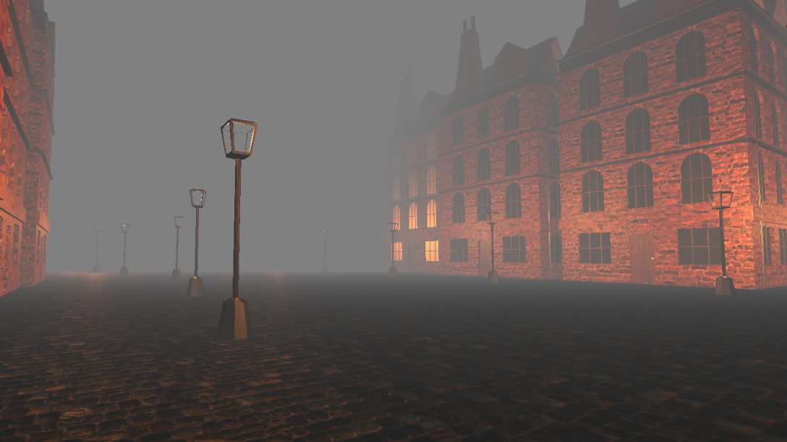
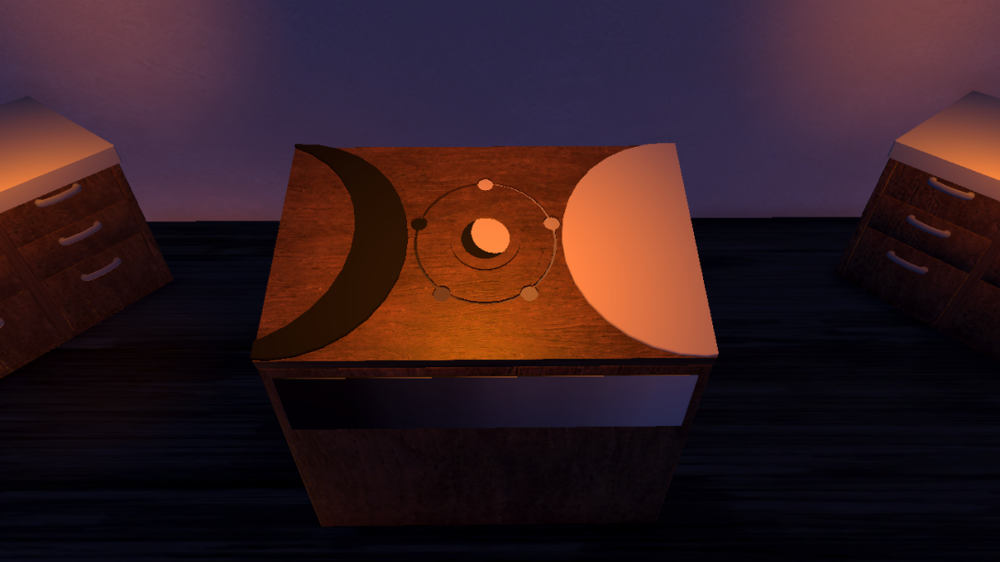

3D 공포 퍼즐 · 6인 팀 · 퍼즐·레벨 기획과 집주인 행동 패턴(FSM) · 2024.09 ~ 2024.12


| 장르 | 퍼즐, 3D, 공포 |
|---|---|
| 주요역할 및 담당 | 1. 퍼즐·레벨디자인 기획 2. 집주인(적) 행동 패턴 FSM, 플레이어, UI, 퍼즐/기믹 개발 |
| 개발 인원 | 총원 6명 |
| 기간 | 2024.09 ~ 2024.12 |
| 개발 환경 | Unity 2022.3.24f1, C# |
| 링크 | GitHub · STOVE |
퍼즐과 레벨을 직접 기획했고, 집주인의 행동 패턴을 FSM(유한 상태 머신)으로 구현해 시야·소리 감지에 따라 탐색·의심·추격을 오가는 공포 게임을 만들었습니다.
저장소에 커밋 142개를 작성했고, 퍼즐·레벨 기획과 집주인 AI, 플레이어·인벤토리·사운드·UI까지 맡았습니다.
| 내가 구현한 것 |
|---|
|
퍼즐·레벨디자인 기획 및 배치 (1~5일차 구성) 집주인 행동 패턴 FSM (탐색·의심·추격 판단·추격), 시야·소리 감지 플레이어 이동·숨기·스태미너 아이템·인벤토리 시스템과 상호작용 오브젝트(금고, 책장, 서랍, 잠긴 문 등) 일차별 이벤트·튜토리얼, 사운드 시스템, 세이브, UI |
설계
집주인(Enemy)의 행동을 4개 상태로 나눠 상태 패턴으로 구현했습니다. 상태는 IState 인터페이스(StateEnter, StateUpdate, StateFixUpdate, StateExit)를 구현하고, StateMachine.SetState가 이전 상태의 Exit와 다음 상태의 Enter를 호출하며 전환합니다.
| 상태 | 하는 일 | 다음 상태 |
|---|---|---|
| Research (탐색) | 정해진 경로를 순찰하며 시야·소리를 감지합니다. 소리가 들리면 순찰을 멈춥니다. | 시야에 플레이어가 들어오면 JudgeChase |
| FeelStrage (의심) | 멈춰 서서 주변을 둘러보고 의심 사운드를 재생합니다. | 플레이어 발견 → JudgeChase 둘러보기가 끝나면 → Research |
| JudgeChase (추격 판단) | 플레이어를 발견한 뒤 1초 동안 추격할지 판단합니다. | 1초 경과 → ChaseState |
| ChaseState (추격) | NavMesh로 플레이어를 추격하고 추격 사운드를 재생합니다. | 놓치거나 8초 동안 추격에 실패 → FeelStrage |
감지
OverlapSphere + Raycast).어려웠던 점과 해결
배운 점
상태 안에 isFindPlayer, pauseResearch, isOneTime 같은 불 변수가 늘어 전환 조건이 복잡해졌습니다. 탐색 안의 "소리 대기"를 별도 상태로 나눠야 했다는 아쉬움이 남습니다.
public interface IState
{
void StateEnter(Enemy enemy);
void StateFixUpdate(Enemy enemy);
void StateUpdate(Enemy enemy);
void StateExit(Enemy enemy);
}
public class StateMachine
{
public IState currentState;
public void SetState(Enemy enemy, IState state)
{
if (currentState == null || currentState == state) return;
currentState.StateExit(enemy); // 이전 상태 정리
currentState = state;
currentState.StateEnter(enemy); // 다음 상태 시작
}
}
// 전환 예: 시야에 플레이어가 들어오면 추격 판단으로
if (enemy.hitTargetList.Count > 0)
enemy.stateMachine.SetState(enemy, JudgeChase.GetInstance());집주인이 있는 집에서 단서와 아이템을 모아 탈출하는 구조를 1~5일차 레벨로 직접 기획하고 배치했습니다. 일차별로 집 구조와 집주인 패턴, 이벤트를 다르게 했고, 운영 규칙을 두어 플레이 흐름을 설계했습니다.
IItem 인터페이스 기반으로 구현했습니다.// 아이템 타입들이 반드시 구현해야 하는 인터페이스
public interface IItem
{
void Use(GameObject target); // target: 아이템 효과가 적용될 대상
public enum ItemType { Used, Consumed, interacted, ETC }
public ItemType type { get; set; }
public string itemName { get; set; }
public Sprite itemImage { get; set; }
// ... (일부 생략)
}SoundData(ScriptableObject) 기반 사운드 시스템과 볼륨 조절, 모든 씬에서 동기화되는 인벤토리·설정 UI